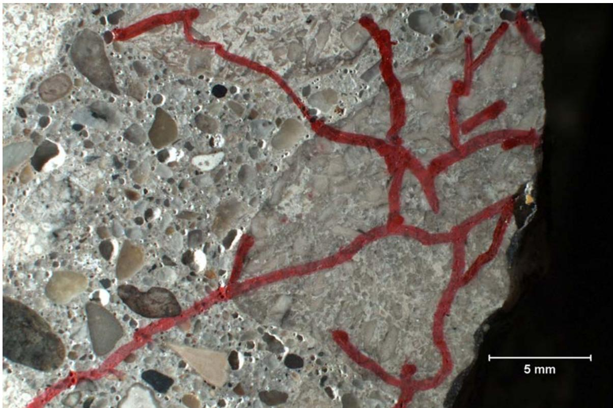
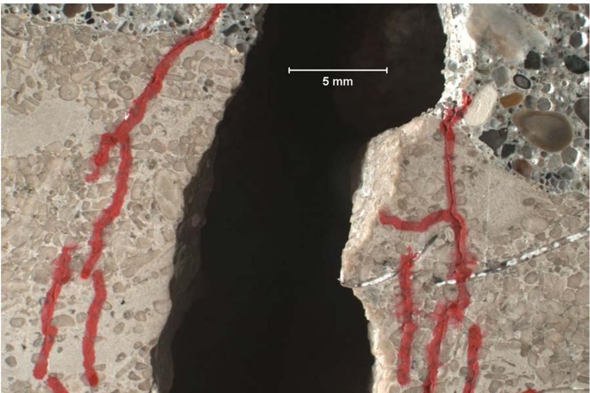
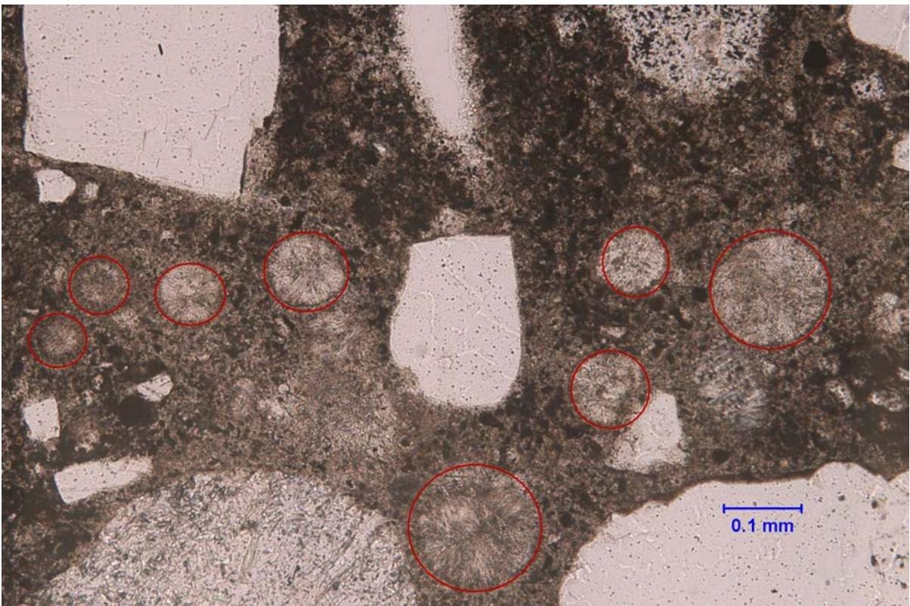
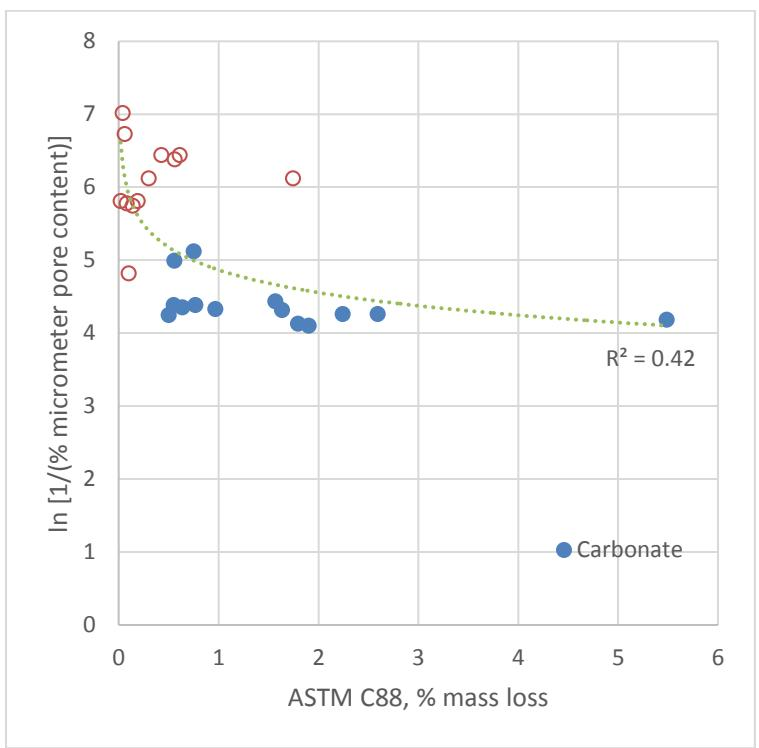
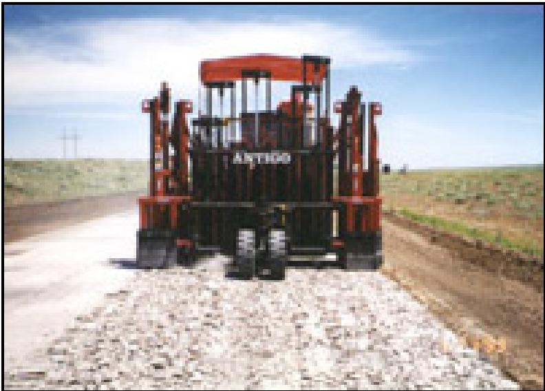

D-Cracking
D-Cracking is a form of freeze-thaw deterioration in concrete classified as a Materials-Related Distress (MRD) because it originates from the delayed expansion of susceptible, reactive coarse aggregate particles rather than external traffic loads [6]. This classification aligns with the understanding that materials-related distress is typically a durability issue rather than a strength issue [10], meaning identifying such problems requires investigating potential causes beyond standard structural performance metrics. It is characterized by microcracking that concentrates within and around porous aggregate particles when they become saturated and freeze [1].
Sources (14)
Overview of D-cracking and Aggregate Role
Marginal or slowly D-cracking aggregates are identified as one of the marginal factors contributing to Premature Joint Deterioration, particularly when aggregates reach the end of their service life (~30 years). This issue is especially relevant for aggregates from glacial gravel deposits common in the Midwest. Furthermore, concrete mixtures containing limestone aggregate demonstrate significantly higher durability compared to those with gravel aggregate, primarily due to reduced popouts from porous materials in the gravel [1].
Mechanisms of Deterioration and Stress Factors
D-cracking typically initiates near the bottom of the concrete slab and develops upward toward the wearing surface, as saturation levels are generally higher at the bottom than at the top [2]. Once deterioration has been initiated at the pavement surface, traffic loading becomes a significant factor in propagating its extent and severity [2]. The underlying mechanisms involve two distinct stress factors: internal hydraulic pressure fracturing the aggregate particle from freezing water, and external pressure exerted by water expelled into the surrounding cement paste during the freezing process; this dual-action deterioration requires non-durable aggregate to be present alongside these specific physical conditions [3]. Furthermore, the fracturing mechanism is driven by continuous fluid addition to rock pores at subfreezing temperatures rather than volumetric expansion of water, a process which requires over 91% saturation to propagate cracks [4].
 Walder and Hallet 1985, Reproduced with permission of the Geological Society of America via Copyright Clearance Center Figure 1. Ice segregation mechanism [4]
Walder and Hallet 1985, Reproduced with permission of the Geological Society of America via Copyright Clearance Center Figure 1. Ice segregation mechanism [4]
Aggregates that are initially sound can become unsound after approximately 29 years of cyclic freeze-thaw exposure while saturated, leading to significant cracking within the coarse aggregate particles [1]. This process is influenced by several environmental and structural factors: deicing salts accelerate wetting and drying cycles in concrete systems, which increases the potential for saturation required to initiate D-cracking [1], while higher water-to-cement ratios (w/cm) increase absorption and air permeability, leading to greater salt accumulation around aggregate particles and a higher tendency for cracks to propagate around the aggregate [1]. Additionally, concrete overlays are more susceptible to curling and warping stresses than full-depth concrete pavements due to a greater ratio of surface area to total slab volume, which can exacerbate distresses associated with D-cracking [5].
Visual Identification and Field Detection
D-cracking has been observed at several field sites, including Ankeny cores and Ames (particularly in distressed sample). In field surveys, D-cracking is visually identified by rating closely spaced crescent-shaped hairline cracks on a scale from 1 (some evidence at joints) to 5 (severe deterioration requiring regular maintenance or full-depth patching) [6]. While GPR testing has successfully identified aggregate-induced cracking in pavements where surface symptoms like cracking and staining were not readily evident, providing information unavailable from visual inspection alone [6], other indicators are found through petrographic examinations. In these examinations, cracking within coarse aggregate particles and mass loss along the joint crack serve as key visual indicators [1]. Furthermore, cracks associated with D-cracking often concentrate adjacent to coarse aggregate particles rather than proceeding directly through them [1], and the distress can manifest as wedges broken off the joint face, which is likely associated with effects of the interfacial transition zone [1].

#2 DESCRIPTION: Microcracking, mapped in red ink, appears to concentrate within a coarse aggregate particle at the distressed joint plane. 5x [1]As a primary component in the calculation of the Pavement Condition Index (PCI), D-cracking is classified by severity levels such as medium or high to evaluate overall pavement performance [5]. The presence of underlying D-cracking in original concrete pavements can lead to the development of faults and accompanying distresses that propagate through subsequent concrete overlays [5]. Consequently, map- or web-shaped cracking patterns observed on overlays are indicative of material durability issues such as D-cracking or alkali-silica reactivity (ASR) within the aggregate [5].

P1 DESCRIPTION: Concentrated microcracking within a coarse aggregate particle bisected by the joint crack and located at below 95mm depth in the core. 5x [1]Pore Structure and Mineralogical Analysis
D-cracking is often accompanied by secondary ettringite deposition that fills fine air voids, which compromises the original freeze-thaw resistance of the concrete matrix. [1]
 D DESCRIPTION: The great majority of fine spherical entrained air voidspaces at 98mm depth in the core and directly adjacent to the distressed joint (left) are filled with secondary ettringite. Microcracking, oriented sub-parallel to the distress 15x - ed joint plane, is marked in red dashed line. [1]
D DESCRIPTION: The great majority of fine spherical entrained air voidspaces at 98mm depth in the core and directly adjacent to the distressed joint (left) are filled with secondary ettringite. Microcracking, oriented sub-parallel to the distress 15x - ed joint plane, is marked in red dashed line. [1]
The presence of secondary ettringite can reduce the percentage of entrained-sized air void space and increase the spacing factor beyond acceptable limits for freeze-thaw resistance. [1]

D DESCRIPTION: The great majority of fine spherical entrained air voidspaces at depth in the core and directly adjacent to the distressed joint, are filled with secondary ettringite. 100x [1]A 2015 MnDOT-sponsored study provided insight into the pore structure mechanisms underlying D-cracking susceptibility:
- Iowa Pore Index test effectively distinguished between carbonate and non-carbonate aggregates [7]
- Mercury intrusion porosimetry revealed that carbonate aggregates have finer pore structures (median diameter 0.01-0.5 μm) compared to non-carbonate aggregates (0.5-4.5 μm) [7]
- No significant relationship found between carbonate content and pore structure parameters — composition alone may not predict D-cracking susceptibility [7]
- Absorption alone insufficient as acceptance criterion; pore structure testing provides additional durability information [7]
The Iowa Pore Index test has limitations that restrict its utility to a screening function rather than a definitive acceptance criterion for aggregate durability. [2]
The Iowa Pore Index test utilizes a sealed system to push water into 1/2 to 3/4 inch aggregate particles under 35 psi of pressure for 15 minutes, where the secondary load (water entering in the final 14 minutes) specifically reflects micropore volume. An index value exceeding 27 indicates poor freezing-thawing durability and high susceptibility to D-cracking. [3]
 Unconfined freezing-thawing test using ASTM C666 conditioning versus Iowa pore index [3]
Unconfined freezing-thawing test using ASTM C666 conditioning versus Iowa pore index [3]
Aggregates associated with D-cracking exhibit a predominance of pore sizes ranging from 0.04 to 0.20 µm in diameter, which aligns with the intermediate-permeability classification containing significant small pores (≤500 nanometers) that trap water and develop damaging internal pressure. [3]

Results of ASTM C88 versus the amount of micropores [3]Mineral stability is determined by the XRD dolomite peak shift threshold value of 2.90 Å, where lower shifts indicate greater stability and pure limestones or dolostones produce longer-lasting pavements compared to mixtures. [4]
Elevated sulfur from pyrite and manganese content is particularly detrimental to dolostone durability, while strontium content exceeding 0.050% reduces limestone durability. [4]
The critical pore-throat size range responsible for D-cracking is identified as between 0.02 to 0.1 µm, where poor-performing aggregates consistently show an abundance of harmful porosity in this specific range. [4]
Coarser-grained dolostones with lower secondary IPI values likely originated from precursor coarse-grained limestones such as skeletal grainstones, while very-fine-grained dolostones with higher secondary IPI values likely originated from precursor fine-grained limestones like micrite. [4]
 Primary-to-secondary pore index ratio versus helium porosity [4]
Primary-to-secondary pore index ratio versus helium porosity [4]
Freeze-Thaw Performance and Testing Standards
The susceptibility of aggregates to internal stress from freezing water, which drives D-cracking, is determined by a combination of their degree of saturation, porosity, permeability, and particle size [8]. To initiate freeze-thaw damage, D-cracking requires a critical degree of saturation (91.7%) within the aggregate particles, with moisture typically accumulating at pavement joints and slab bottoms due to inadequate drainage [7]. A 2016 follow-up study tested 27 Minnesota aggregates (15 carbonate, 12 non-carbonate) using three freeze-thaw performance methods, providing further evidence for D-cracking mechanisms [3]. In these tests, non-carbonate aggregates outperformed carbonate aggregates (t-test: extremely significant for ASTM C666 and CSA A23.2-24A) [3]. While the Iowa Pore Index correlated fairly well with unconfined freeze-thaw (ASTM C666 conditioning, R² = 0.51) and CSA A23.2-24A (R² = 0.47), it correlated poorly with ASTM C88 (R² = 0.15) [3]. Furthermore, micropore volume (0.1–1 μm) strongly correlated with both IPI (R² = 0.80) and freeze-thaw performance, confirming that micropores are the primary driver of D-cracking susceptibility [3].
 Relationship between micropores and Iowa pore index [3]
Relationship between micropores and Iowa pore index [3]
Based on these findings, recommended limits at IPI = 27 are 8% mass loss (ASTM C666 conditioning) and 5% mass loss (CSA A23.2-24A) [3]. According to the aggregate pore structure classification (Verbeck & Landgren 1960), intermediate-permeability aggregates with significant small pores (<500 nm) are most susceptible to D-cracking [3]. Regarding specific testing protocols, the NT BUILD 485 variant of CSA A23.2-24A involves soaking aggregate in pure water or a 1 percent NaCl solution for 24 hours, followed by cooling from 68°F to 0°F and thawing at 68°F over ten cycles to measure mass loss as an indicator of freezing-thawing performance [3].
 Fraying after freezing-thawing cycles in the CSA A23.2-24A test (1/2 inch aggregate particles) [3]
Fraying after freezing-thawing cycles in the CSA A23.2-24A test (1/2 inch aggregate particles) [3]
Mitigation through Mixture Design and Internal Curing
Adjusting the maximum size of coarse aggregate particles significantly impacts concrete performance; while reducing this size can minimize or eliminate D-cracking because smaller particles allow unfrozen water to be expelled quickly during freezing conditions without developing the damaging internal pressure required to fracture the particle [3], such a modification may lead to a greater incidence of intermediate transverse cracking with attendant faulting [2]. Conversely, increasing the maximum size of coarse aggregate particles can enhance overall durability by reducing the volume of cement paste required, as the paste is typically the component most sensitive to physical or chemical attack [8]. Durability is further improved through the use of supplementary cementitious materials (SCMs), which generally enhance impermeability and resistance to thermal cracking by reducing pore size and permeability in the hydrated product [8], as well as through silica fume, which improves absorption and air permeability in concrete mixtures containing high w/cm ratios and gravel aggregate [1].
Internal curing using prewetted lightweight fine aggregate (LWFA) or superabsorbent polymers (SAPs) can mitigate early-age cracking and improve durability by supplying water from within the concrete matrix to sustain cement hydration [9]. Due to this internal moisture supply, internally cured concrete mixtures demonstrate reduced plastic shrinkage cracking and lower autogenous shrinkage compared to conventional concrete [9], while also exhibiting improved durability through enhanced hydration of SCMs and reduced porosity resulting from extended moisture supply [9]. Furthermore, the use of internally cured concrete in continuously reinforced concrete pavement (CRCP) has been shown to potentially allow for thinner slab designs by reducing built-in stress associated with moisture gradients [9]. Field applications of internal curing have been implemented in bridge decks across Illinois, Indiana, New York, and Utah, as well as in pavement patches in Indiana, Texas, Michigan, and Kansas [9].
 Example of internally cured concrete being used for concrete pavement patching [9]
Example of internally cured concrete being used for concrete pavement patching [9]
Mitigation through Surface Sealing and Drainage
D-cracking can be mitigated by minimizing moisture infiltration through joint sealing, a process that reduces the saturation of susceptible aggregate particles required to initiate freeze-thaw deterioration [10]. Similarly, penetrating sealers mitigate D-cracking by reducing moisture and chloride ion penetration, which extends the time required for susceptible aggregates to reach the critical degree of saturation (91.7%) needed to initiate freeze-thaw damage [11]. Furthermore, the application of hydrophobic sealers increases the water contact angle on concrete surfaces, which significantly reduces capillary suction potential and decreases early-age water absorption rates [11].
 Degree of saturation for concrete specimens: mAir (top left), mOXY (top right), and mDcrack (bottom) [11]
Degree of saturation for concrete specimens: mAir (top left), mOXY (top right), and mDcrack (bottom) [11]
Macadam stone bases function as effective drainage layers that prevent D-cracking in PCC pavements, particularly when Class 1 aggregates containing fines are used [12]. To achieve a 20-year design life, a minimum pavement thickness of 5.5 inches is required over macadam subbase, as thinner sections exhibit poor performance and low structural ratings [12].
Rehabilitation Strategies: Rubblization
Rubblization is frequently employed as a rehabilitation strategy to mitigate the reflection of D-cracking and other materials-related distresses into new asphalt overlays by destroying the slab action of deteriorated concrete pavements [13]. This process involves breaking existing PCC slabs into pieces typically ranging from 2 to 6 inches in size and overlaying them with hot mix asphalt (HMA) [13]. Rubblization is considered the most viable rehabilitation option when existing pavement patching quantities exceed 10% to 15%, as it effectively addresses extensive distresses that other methods may not fully resolve [13].

Multi-Head Breaker (Antigo Construction, Inc.) [13]The structural behavior of rubblized concrete is comparable to a high-strength granular base, exhibiting load-distributing characteristics that are 1.5 to 3 times greater than those of a high-quality, dense-graded, crushed-stone base [13]. For structural design purposes, rubblized PCC pavements typically exhibit an average layer coefficient value of approximately 0.19 [13]. However, rubblized sections constructed without edge drains or containing rubblized pieces smaller than two inches tend to exhibit higher levels of longitudinal cracking outside the wheel path [13].
 Picture of longitudinal cracking on HMA-overlaid rubblized PCC (I.D. No. 21: IA3 in Delaware County) [13]
Picture of longitudinal cracking on HMA-overlaid rubblized PCC (I.D. No. 21: IA3 in Delaware County) [13]
Related Concepts
- Premature Joint Deterioration
- Freeze-Thaw Durability
- Iowa Pore Index
- Mercury Intrusion Porosimetry
- Carbonate Aggregate
- Materials-Related Distress (MRD)
Recycled concrete aggregate (RCA) derived from pavements with D-cracking can be successfully incorporated into new concrete mixtures without causing the reoccurrence of D-cracking distress. [14]
Engineered mixture designs utilizing supplementary cementitious materials (SCMs) such as fly ash or slag are required to overcome durability issues associated with using RCA sourced from freeze-thaw environments. [14]
Concrete containing RCA exhibits a lower modulus of elasticity and a higher coefficient of thermal expansion (CTE) compared to concrete made with virgin aggregates. [14]
Impurities such as chert, opal, and clay can increase frost susceptibility by weakening the bond between aggregate and cement paste and causing volume instability under changing moisture conditions. [7]
References
- P. Taylor, L. Sutter, and J. Weiss, "Investigation of Deterioration of Joints in Concrete Pavements," National Concrete Pavement Technology Center, Ames, IA, Rep. TPF-5(224), 2012. [Online]. Available: https://www.intrans.iastate.edu/wp-content/uploads/2018/03/joint_deterioration_penetrating_sealers_field_study_w_cvr.pdf
- J. Grove, G. Fick, T. Rupnow, and F. Bektas, "Material and Construction Optimization for Prevention of Premature Pavement Distress in PCC Pavements," National Concrete Pavement Technology Center, Ames, IA, Rep. TPF-5(066), 2008. [Online]. Available: https://www.intrans.iastate.edu/wp-content/uploads/2018/03/mco-final.pdf
- F. Bektas, W. Cai, and K. Wang, "Aggregate Freezing-Thawing Performance Using the Iowa Pore Index," Center for Transportation Research and Education, Ames, IA, 2016. [Online]. Available: https://www.cptechcenter.org/wp-content/uploads/2018/03/aggregate_freezing-thawing_using_Iowa_pore_index_w_cvr.pdf
- F. Hasiuk, M. F. A. Ridzuan, and P. Taylor, "Calibrating the Iowa Pore Index with Mercury Intrusion Porosimetry and Petrography," Institute for Transportation, Ames, IA, Rep. InTrans Project 15-553, 2017. [Online]. Available: https://www.intrans.iastate.edu/wp-content/uploads/2018/03/Iowa_pore_index_calibration_w_cvr.pdf
- J. Gross, D. King, D. Harrington, H. Ceylan, Y. A. Chen, S. Kim, P. Taylor, and O. Kaya, "Concrete Overlay Performance on Iowa's Roadways (Field Data Report)," National Concrete Pavement Technology Center, Ames, IA, Rep. TR-698, 2017. [Online]. Available: https://www.intrans.iastate.edu/wp-content/uploads/2017/09/Iowa_concrete_overlay_performance_w_cvr.pdf
- S. Schlorholtz, B. Dawson, and M. Scott, "Development of In Situ Detection Methods for Materials-Related Distress (MRD) in Concrete Pavements: Phase 1," Center for Portland Cement Concrete Pavement Technology, Iowa State University, Ames, IA, Rep. CTRE 00-96, 2003. [Online]. Available: https://www.intrans.iastate.edu/wp-content/uploads/2018/03/mrd.pdf
- F. Bektas, K. Wang, and J. Ren, "Carbonate Aggregate in Concrete," Institute for Transportation, Ames, IA, 2015. [Online]. Available: https://www.intrans.iastate.edu/wp-content/uploads/2018/03/201514.pdf
- P. Taylor, F. Bektas, E. Yurdakul, and H. Ceylan, "Optimizing Cementitious Content in Concrete Mixtures for Required Performance," National Concrete Pavement Technology Center, Ames, IA, 2012. [Online]. Available: https://www.intrans.iastate.edu/wp-content/uploads/2018/03/taylor_ocm_w_cvr2.pdf
- W. J. Weiss and L. Montanari, "Guide Specification for Internally Curing Concrete," National Concrete Pavement Technology Center, Ames, IA, Rep. TPF-5(286), 2017. [Online]. Available: https://www.intrans.iastate.edu/wp-content/uploads/2018/09/IC_guide_spec_w_cvr.pdf
- D. Harrington, R. Rasmussen, D. Merritt, T. Cackler, and P. Taylor, "Long-Term Plan for Concrete Pavement Research and Technology—The Concrete Pavement Road Map (Second Generation): Volume II, Tracks (FHWA-HRT-11-070)," National Center for Concrete Pavement Technology, Iowa State University, Ames, IA, 2012. [Online]. Available: https://www.fhwa.dot.gov/publications/research/infrastructure/pavements/pccp/11070/11070.pdf
- J. T. Kevern, G. Adil, P. Taylor, S. Sadati, and K. Wang, "Evaluation of Penetrating Sealers for Concrete," National Concrete Pavement Technology Center, Iowa State University, Ames, IA, Rep. TR-765, 2022. [Online]. Available: https://www.intrans.iastate.edu/wp-content/uploads/2022/06/concrete_penetrating_sealers_eval_w_cvr.pdf
- D. White and P. Vennapusa, "Optimizing Pavement Base, Subbase, and Subgrade Layers for Cost and Performance on Local Roads," Concrete Pavement Technology Center and Center for Earthworks Engineering Research, Ames, IA, Rep. TR-640, 2014. [Online]. Available: https://www.intrans.iastate.edu/wp-content/uploads/2018/03/local_rd_pvmt_optimization_w_cvr.pdf
- H. Ceylan, K. Gopalakrishnan, and S. Kim, "Rehabilitation of Concrete Pavements Utilizing Rubblization and Crack and Seat Methods (Phase II): Performance Evaluation of Rubblized Pavements in Iowa," CTRE, Iowa State University, Ames, IA, Rep. TR-550, 2008. [Online]. Available: https://www.intrans.iastate.edu/wp-content/uploads/2018/10/rubblization_pavements.pdf
- S. Garber, R. Rasmussen, T. Cackler, P. Taylor, D. Harrington, G. Fick, M. Snyder, T. Van Dam, and C. Lobo, "A Technology Deployment Plan for the Use of Recycled Concrete Aggregates in Concrete Paving Mixtures," National Concrete Pavement Technology Center, Ames, IA, 2011. [Online]. Available: https://www.intrans.iastate.edu/wp-content/uploads/2018/03/RCA-Draft-Report_final-ssc.pdf
Feedback on this page